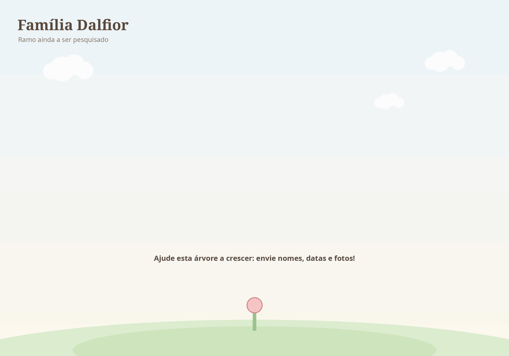

Família Dalfior
Ramo ainda a ser pesquisado. Há uma lista de imigrantes Dal Fior na página.
0 pessoas · 0 gerações
A árvore em movimento

Ainda não há pessoas cadastradas neste ramo. Crie subpastas como 01Nome dentro de 03Dalfior/.
Fotos